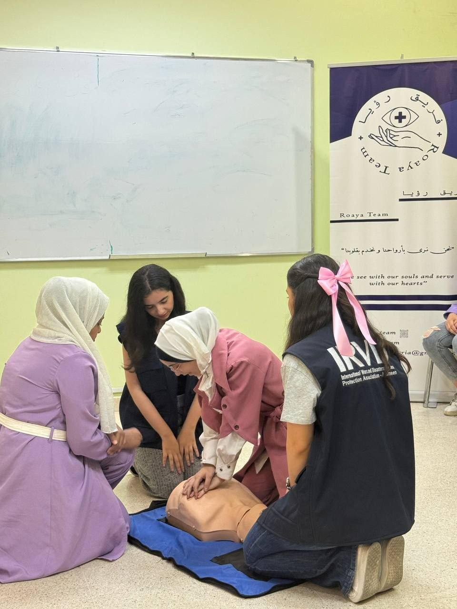
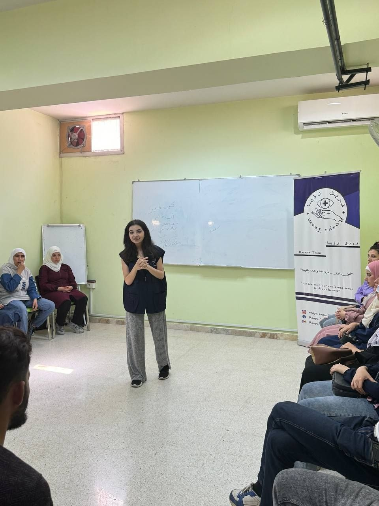
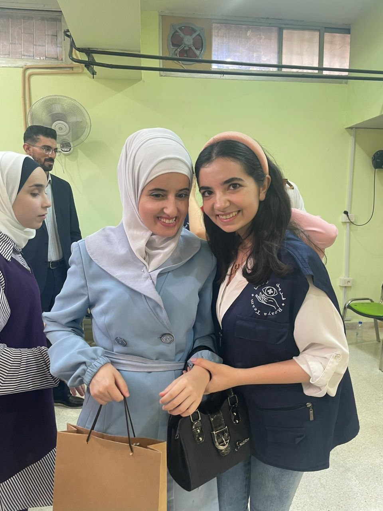
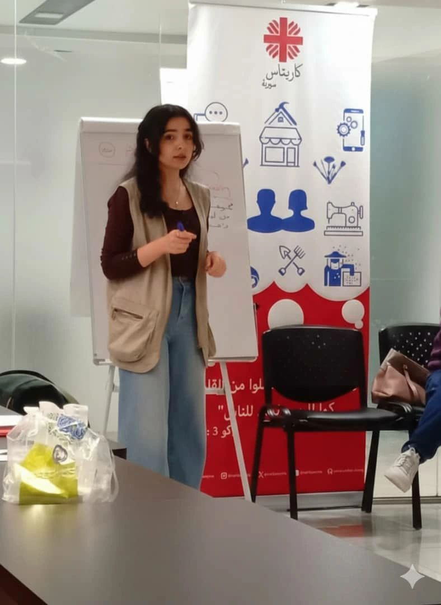
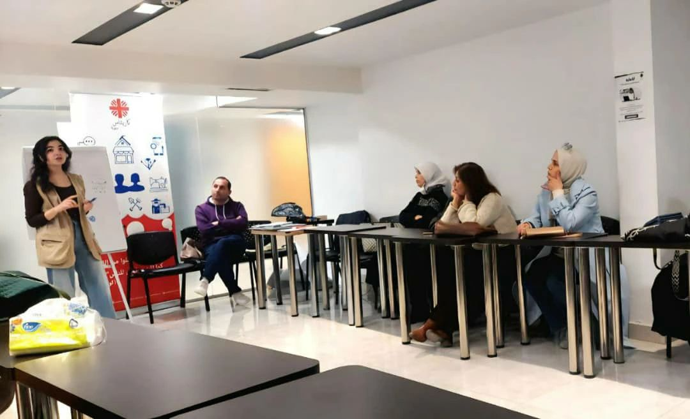
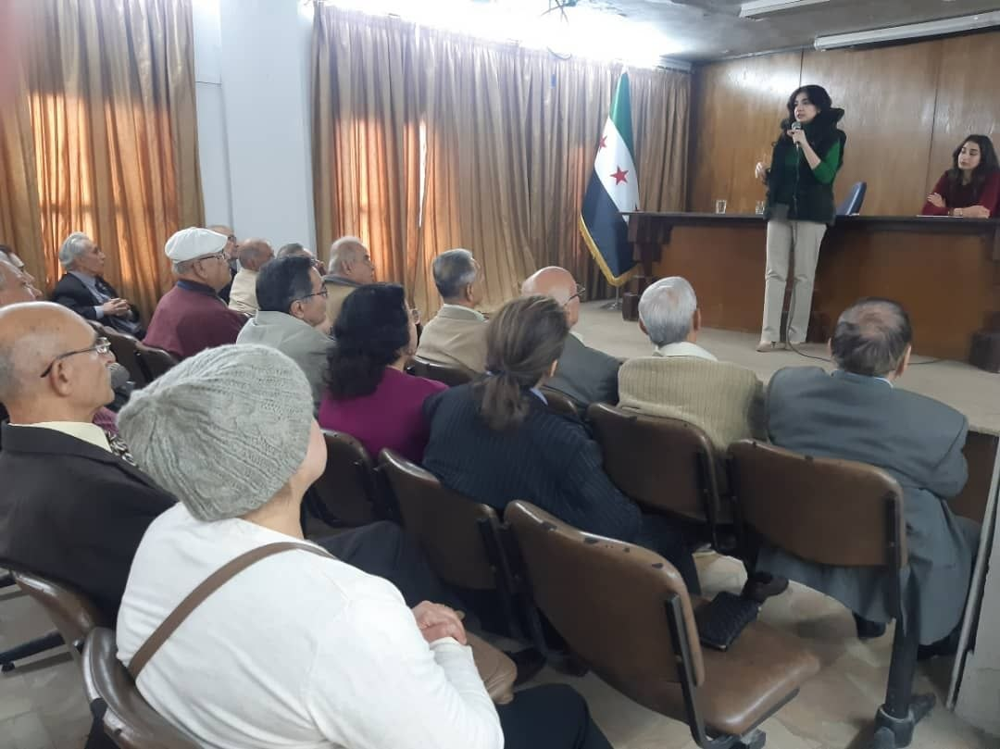
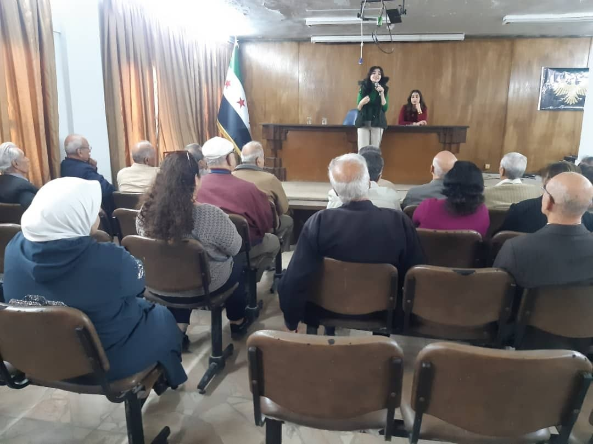

Community & Impact
Bridging medical knowledge with grassroots community empowerment, peacebuilding, and inclusive health education across Syrian communities.
Ro'ya Team
The first team in the Levant to teach first aid to people with visual and hearing impairments. Training our first cohort reshaped how I think about accessibility — not a simplified version of standard content, but a redesign built around touch, sound, and a different starting point entirely.
- Designed customized, tactile, and sensory-adapted first aid educational kits for participants.
- Trained over 200 participants using tailored disability-inclusive pedagogical methodologies.
- Promoted health equality and self-reliance in emergency situations among vulnerable populations.




Caritas Syria — Peacebuilding & Social Cohesion
As a Community Mobilizer with Caritas Syria, I work in a space that was never originally about health — it's about rebuilding trust between people after conflict. I introduced health as a shared language within that work: something neutral enough to bring different groups into the same room, and useful enough to keep them there. I facilitated dialogue sessions aimed at strengthening cohesion among communities in the aftermath of Syria's recent conflict, and I currently lead two of these community-driven initiatives, supported by Swiss funding:
Watad Initiative
Rehabilitated the Cultural Center into a safe community space for adolescents, establishing four specialized clubs: Health & Wellbeing Club, Environmental Club, Debating Club, and Physics Club. Adolescents are an age group public health strategy often skips past — too old for pediatric programming, too young to be reached through adult channels — and this initiative exists to close that gap.
Naseej Initiative
Coordinates health education activities that build social cohesion among parents, teachers, and children in post-conflict communities. The goal isn't just health knowledge transfer — it's rebuilding the trust and routine that make people receptive to that knowledge in the first place.




Towards a Better Future
In partnership with the Rural Damascus Directorate of Culture, I organized community workshops and awareness sessions marking international health days — spaces where local residents came together to celebrate the day, learn key health messages, and engage with ideas relevant to their communities.
Featured Health Outreach & Coverage Workshops Gallery
